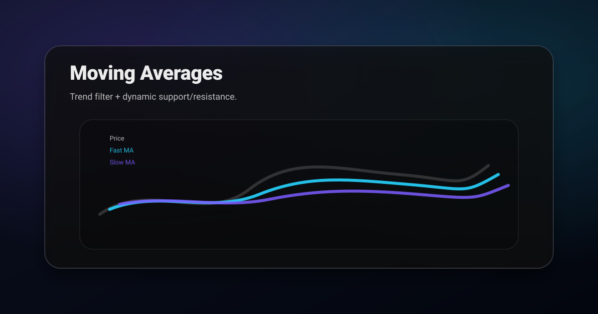

Reality check: no MA setting guarantees profits. Consistency + confirmation is what improves outcomes.
How to use moving averages the practical way
- Trend filter: determines which direction you’re allowed to trade.
- Dynamic support/resistance: pullbacks often react around a key MA.
- Context: steep slope = stronger trend; flat slope = range risk.
A clean “pullback to MA” plan
This is one of the simplest reusable structures:
- Context: trend intact (HH/HL), price above MA, MA slope up.
- Setup: pullback into MA + a nearby S/R zone.
- Trigger: rejection candle or micro structure shift back up.
- Invalidation: acceptance below the MA + below the pullback low/zone.
Common mistakes
- Trading crossovers in chop: price will whip you.
- Ignoring structure: MA alone doesn’t define invalidation.
- Overfitting settings: the “best MA” changes by asset/timeframe, consistency beats optimization.
A prompt for AI MA setups
Analyze this chart screenshot with moving averages.
1) Is trend bullish, bearish, or ranging?
2) Where is price relative to the MA(s)?
3) Give a pullback-to-MA plan with trigger + invalidation + target zone.A moving average is a summary, not a signal
The most useful reframe here is that a moving average tells you nothing the price did not already tell you. It is arithmetic applied to closes you can see. What it provides is compression: a single line standing in for fifty candles, which is genuinely useful for reading trend at a glance and genuinely useless as a standalone trigger.
This explains why crossover systems tested in isolation perform so poorly. By the time a fast average crosses a slow one, the move that caused the cross has already happened. You are not receiving early information, you are receiving a delayed confirmation of something the chart showed you earlier.
Used as context the same tool works well. Price above a rising 200 period average is a different environment from price below a falling one, and knowing which you are in should change which setups you take and which direction you are willing to trade.
Choosing a period, and why the popular ones work
The 20, 50, and 200 are not mathematically special. They work partly because enough traders watch them that reactions become somewhat self-fulfilling, and partly because they happen to correspond to useful horizons: roughly a month, a quarter, and a year of trading days.
Match the period to your holding time rather than copying a number from a video. If you hold trades for hours, a 200 period average on a daily chart describes a trend you will never participate in. If you hold for weeks, a 9 period average on a five minute chart is noise with a line drawn through it.
Exponential averages weight recent prices more heavily and turn faster, which helps in trends and hurts in chop by producing more false turns. Simple averages are slower and steadier. Neither is better, and switching between them after a losing streak is how traders end up with no consistent reference at all. Pick one and keep it long enough to learn its behaviour.
The dynamic support illusion
Price bouncing off a moving average looks like the average provided support. It did not. In a healthy trend price pulls back a roughly proportional amount each time, and a correctly tuned average happens to sit where those pullbacks end. The average is describing the trend's rhythm, not creating it.
This distinction matters the moment the rhythm changes. When a trend decelerates, price cuts through the average that had held for months, and traders who believed in the line as support keep buying into it. The line has not failed, the trend has, and the line was only ever a shadow of the trend.
Use the average to find the pullback, then require the actual structure to confirm it. A higher low forming near the average is a trade. Price merely touching the average is a location, and a location is not a reason.
Where moving averages fail badly
- Ranging markets. Price crosses the average repeatedly, generating a stream of signals that are each individually reasonable and collectively expensive. Most of a crossover system's losses come from a minority of sideways periods.
- After gaps. A large gap distorts the average for as many periods as the average is long, so the line reflects a price regime that no longer exists.
- Low liquidity instruments. A handful of outlier closes drags the average away from anything meaningful.
- Immediately after a regime change. The average lags by design, so it is least reliable exactly when the market is doing something new, which is when you most want guidance.
A simple guard against the first and worst of these is to check whether the average is meaningfully sloped and whether price has been making progress in one direction. If neither is true, put the indicator away and trade the range boundaries instead.
Using averages as a trailing exit
This is arguably what moving averages are best at, and it is the use that gets discussed least. As an entry trigger they lag. As a trailing stop they lag in a way that actually helps, because staying in a trend requires tolerating pullbacks rather than reacting to them.
The method is straightforward. Once a trade is running in your favour, trail the stop below the average rather than below each swing low. In a strong trend this keeps you in far longer than structure-based trailing, which tends to eject you on the first sharp retracement.
The trade-off is that you give back more at the end. A trailing average will not get you out near the high, it will get you out after the trend has clearly turned. That is the price of capturing the middle of large moves, and for trend following it is usually a price worth paying. Match the period to how much heat you are willing to sit through: shorter averages exit early and often, longer ones hold through deeper pullbacks.
Multiple averages without the clutter
Stacking several averages on a chart is popular and mostly counterproductive, because each one adds a line without adding independent information. Two is usually the practical limit, and they should serve clearly different purposes.
A reasonable pairing is one long average defining the regime and one short average defining the pullback. The long one answers whether you are looking for longs or shorts at all. The short one answers where a pullback within that regime is likely to end. You are not waiting for them to cross, you are using them as two separate filters.
The separation between them also carries information. When a short average pulls far away from a long one, the move is extended and pullback entries are riskier because the eventual retracement will be deep. When they converge and flatten, the trend has paused and you should expect chop rather than continuation.
Testing whether an average is respected at all
Before relying on any moving average for a given instrument, check whether that instrument has been respecting it recently. This takes thirty seconds and prevents a great deal of wasted effort.
Scroll back over the last few months and count how often pullbacks ended near the average versus cutting straight through it. If price has been slicing through it repeatedly, that average is not a reference the market is using and no amount of parameter tuning will change that. Try a different period, or accept that this instrument is not currently in a state where averages help.
Instruments move in and out of this behaviour. An average that worked beautifully during a trending quarter can become useless when the market ranges. Re-check periodically rather than assuming the setting you chose months ago still describes the market you are trading today.
Related posts
- Market Structure: BOS vs CHoCH (Simple Guide)
- Support & Resistance Trading (Simple Levels That Actually Work)
- Break and Retest Strategy
- Crypto vs Stocks Volatility
- Risk Management & Position Sizing
A moving average is context, not a plan. Turning context into a trigger and an invalidation is covered in AI chart analysis.
Get ChartsGPT
Turn your screenshot into key levels, scenarios, trigger, and invalidation in seconds.


About ChartsGPT
ChartsGPT is an AI chart analysis app designed to turn screenshots into structured levels and scenarios. For support, contact anthonyvvza@gmail.com.